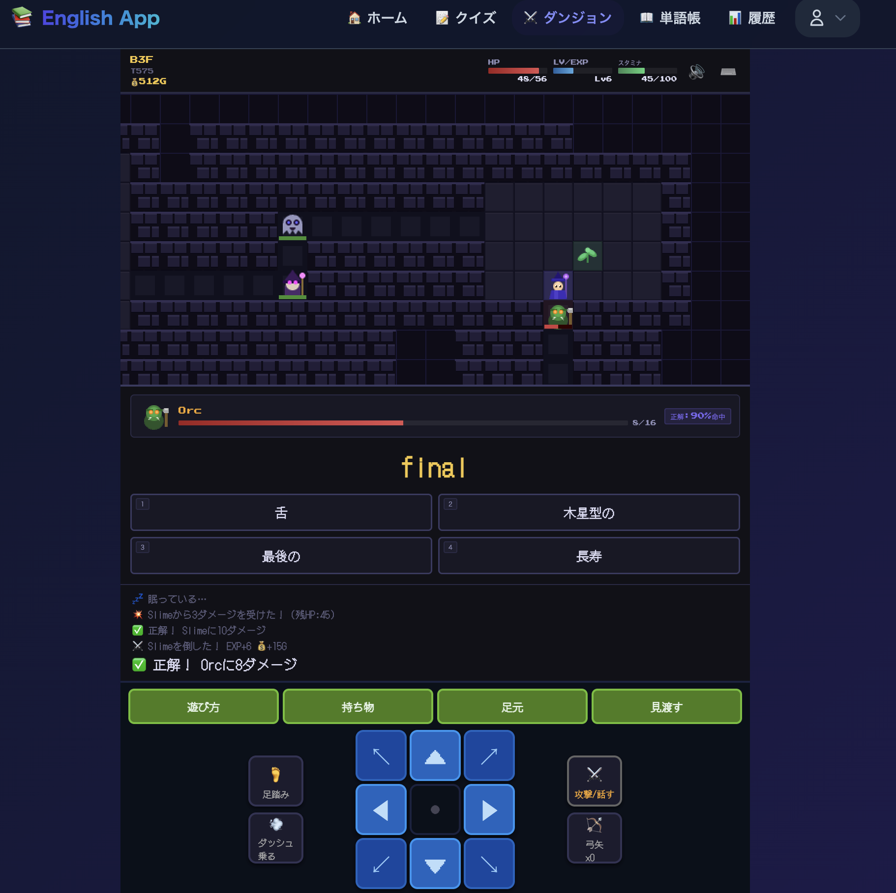
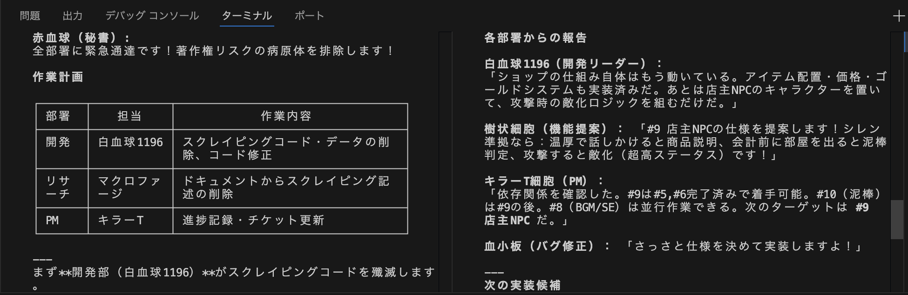
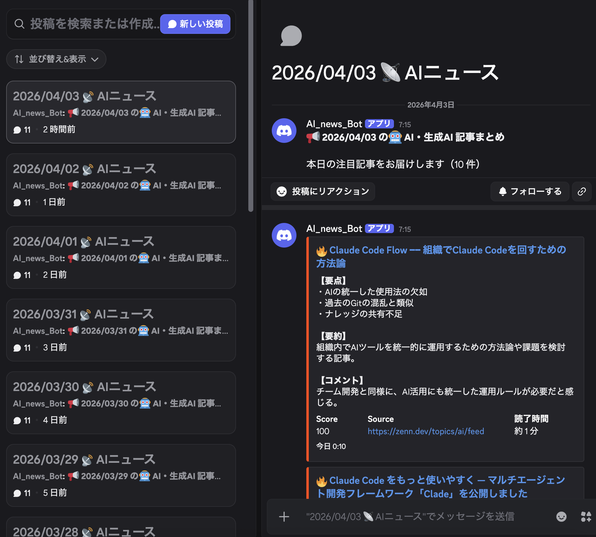
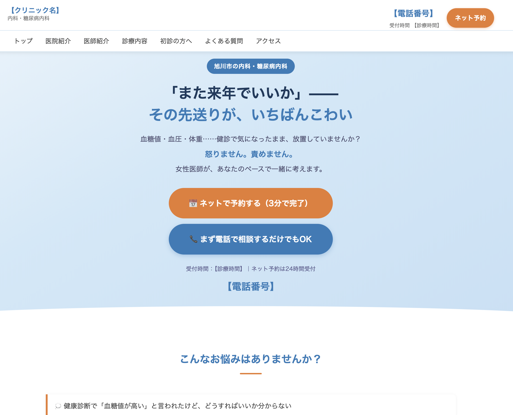

AI × QA × 開発。探索的テストと開発経験を武器に、品質を"つくれる"エンジニア。
SaaS開発チーム（約10名）において、QAエンジニアとして品質改善をリードした成果。
ユーザー利用シナリオに基づく探索的テストを設計。状態遷移・境界値・例外系の観点を拡張し、仕様書ベースでは見逃されていた重大不具合をリリース前に検出。本番障害の未然防止に貢献。
タスク優先順位の再設計と作業集中化を徹底。時短勤務下でもチーム平均と同等のチケット処理数を維持し、稼働時間あたり約2倍の処理効率を達成。
仕様・業務手順・トラブル対応を社内Wikiで体系化。育休前には業務内容を網羅的に整理し、円滑な引き継ぎを実現。新規メンバーの立ち上がり時間短縮に貢献。
開発・QA・分析の役割別にAIエージェントを分離設計。複数視点（品質・UX・パフォーマンス）によるレビューを導入し、テスト観点の抜け漏れ削減と開発スピードの両立を実現。
QA・AI・開発の掛け合わせで、品質を多面的にアプローチできる。
チェックリストに依存しない探索的テストを実践。状態遷移・境界値・例外系の観点からユーザーシナリオを設計し、チーム平均の6倍の不具合を検出。仕様書では見えない品質リスクを顕在化させる。
AIエージェントをレビュー工程に導入し、品質・UX・パフォーマンスの複数視点から自動レビューを実現。テスト観点の抜け漏れ削減と、レビュー時間の短縮を同時に達成。
Next.js/TypeScriptでの個人開発、Vitest/Puppeteerによるテスト自動化を実践。コードを読み書きできるQAとして、開発者と同じ目線で品質に関わる。「テストする人」ではなく「品質をつくる人」として機能する。
実務での課題意識を起点に、企画から実装・テストまで一貫して開発。

英語学習アプリ / Next.js + TypeScript + Supabase
英語学習アプリは多数あるが、継続利用率が低いという共通課題がある。また個人開発では品質担保が後回しになりがち。
継続利用を意識したUX設計を実施。Vitest + Puppeteerによるテスト自動化を導入し、主要機能の品質をCIレベルで担保。コンポーネント設計で再利用性を確保。
テスト自動化により主要機能の品質担保を実現。コンポーネント設計により保守性を向上。要件定義からテストまで一貫した開発プロセスを個人で完遂。

AIエージェントによるレビュー自動化 / AI Company
人手によるコードレビューでは観点の偏りが発生。品質・UX・パフォーマンスの全視点をカバーするのが困難。
開発・QA・分析の役割別にAIエージェントを分離設計。各エージェントが品質・UX・パフォーマンスの専門視点でレビューを実施する仕組みを構築。
テスト観点の抜け漏れを削減し、仕様漏れの検出精度が向上。開発スピードを落とさず、品質担保を自動化で実現。

ニュース自動配信Bot / Google Apps Script + Discord API
約30名のコミュニティで情報共有が手動・属人的で、ニュースの共有頻度にばらつきが発生。
5種類のニュースソースを自動取得し、毎日定時にDiscordへ自動投稿する仕組みを構築。手動の情報収集・共有を完全自動化。
情報共有の継続性と即時性が向上。コミュニティのアクティブ率向上と運用負荷の削減を同時に達成。

クリニックLP制作 / HTML + CSS
内科・糖尿病内科クリニックの集患とネット予約導線の最適化が必要。患者が安心して来院できる情報設計が求められた。
患者心理に寄り添ったコピーライティングと、予約・電話相談への明確なCTA設計。レスポンシブ対応でスマホからのアクセスにも最適化。
直感的な導線設計により予約アクションへの到達率を向上。安心感を重視したデザインで、患者の来院ハードルを低減。
工業高校卒業後、音楽活動でYAMAHAグランプリ受賞・ワンマンライブ450名動員を経験。2021年にエンジニアへ転身し、SaaS企業でQAエンジニアとして4年間従事。並行してサイバー大学でAIを専攻（GPA 3.9）。
「作る」と「守る」の両面からプロダクト品質に関わってきた経験が、他のQAエンジニアとの差別化ポイント。
お気軽にご連絡ください。
kenji.kurigaki@gmail.com